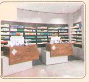
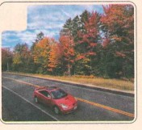
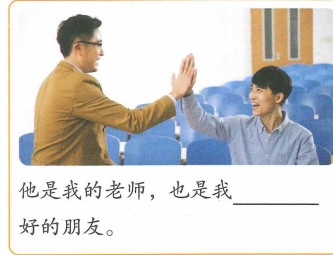
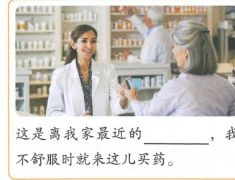
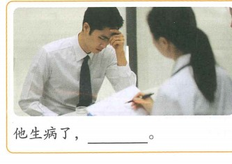
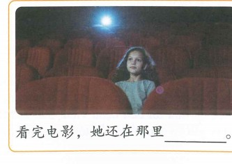

我最喜欢吃中国菜
Em thích ăn món Trung Quốc nhất
Mục tiêu: miêu tả tình trạng sức khỏe; dùng trợ từ động thái “着”; dùng phó từ chỉ mức độ “最”.
🔥 Khởi động
1. Chọn hình tương ứng: A 疼 B 药 C 药店 D 路上


2. Dùng một động từ hoặc cụm động từ miêu tả các hình: trời tuyết, cô bé nghe nhạc, mở cửa, cầm chai nước.
📚 Từ vựng 1
🎧 Nghe Bài khóa 1
（1）白家月现在在哪儿？ A 医院 B 家里 C 教室
（2）王一飞现在去做什么？ A 开车 B 回家 C 找医生
💬 Bài khóa 1
（1）白家月为什么不回家？
（2）白家月现在能不能动？为什么？
🧠 Trợ từ động thái “着” (1)
“着” đặt sau động từ, biểu thị sự duy trì của động tác hoặc trạng thái. Phủ định: 没（有）+ động từ + 着.
教室的门开着。
教室的门没开着。
Hoàn thành: 别找了，我 ______ 呢。 · 回来了，在她的房间 ______ 呢。 · 房间的门 ______，但是刘爷爷没在里边。
📚 Từ vựng 2
🎧 Nghe Bài khóa 2
（1）王一飞在做什么？ A 开车 B 看病 C 接电话
（2）今天天气怎么样？ A 很好 B 下雨 C 下雪
💬 Bài khóa 2
（1）王一飞为什么要开慢一点儿？
（2）李文一会儿要做什么？
🧠 Trợ từ động thái “着” (2)
Trong câu biểu thị sự duy trì của động tác/trạng thái, tân ngữ đứng sau “着”.
她穿着白色的裤子。
陈天中没拿着咖啡。
Nghi vấn có thể dùng 吗, 没有 hoặc “động từ + 没 + động từ + 着”.
📚 Từ vựng 3
🎧 Nghe Bài khóa 3
（1）白家月现在怎么样了？ A 不想吃饭 B 身体不舒服 C 头不那么疼了
（2）王一飞现在要做什么？ A 去买药 B 找医生 C 去做菜
💬 Bài khóa 3
（1）白家月为什么头不那么疼了？
（2）李文让白家月做什么？
🧠 Phó từ chỉ mức độ “最”
“最” đặt trước tính từ hoặc động từ chỉ tâm lý, biểu thị một thuộc tính vượt trội hơn tất cả người hoặc sự vật cùng loại.
在我们家，爸爸最高。
你们班谁说中文说得最好？
📚 Từ vựng 4
📖 Bài khóa 4
（1）白家月是在哪儿买的药？ A 医院 B 药店 C 商店
（2）现在白家月要做什么？ A 睡觉 B 去看李文 C 送王老师
✏️ Bài tập tổng hợp
Chọn: A 经常 B 慢 C 时 D 身体 E 路上
（1）______ 车多人多，你慢点儿开。
（2）他今天 ______ 不舒服，所以没来上课。
（3）我游泳游得很 ______，但我跑步跑得很快。
（4）星期天我 ______ 跟朋友去踢球。
（5）昨天雪太大，公交车开得很慢。是啊，我到家 ______ 都快9点了。
🖼️ Dùng từ vựng và ngữ pháp miêu tả tranh

他是我的老师，也是我 ______ 好的朋友。

这是离我家最近的 ______，我不舒服时就来这儿买药。

他生病了，______。

看完电影，她还在那里 ______。
🎭 Hoạt động trên lớp · Đóng vai
Hai người một nhóm: một người đóng vai bác sĩ, một người đóng vai bệnh nhân. Bệnh nhân bị đau đầu nên đến bệnh viện khám; bác sĩ hỏi bắt đầu đau từ khi nào, đã uống thuốc chưa, gần đây đã làm gì… Cố gắng dùng từ vựng và điểm ngôn ngữ của bài.
B：头疼，不能动，一动就疼。……
🎯 Tổng kết Bài 11
✓ Miêu tả tình trạng sức khỏe và bệnh tình.
✓ Trợ từ động thái 着: diễn đạt sự duy trì của động tác/trạng thái.
✓ Phó từ 最: biểu thị mức độ cao nhất.
✓ Từ vựng trọng tâm: 头、疼、经常、动、着、路上、慢、进、药、身体、时、最、药店.